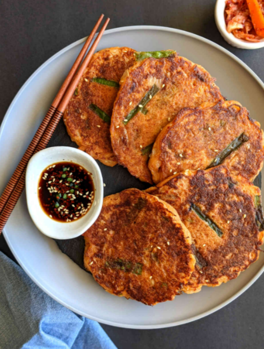

Bindaetteok

Description
Bindaetteok is a popular traditional Korean street food. It is a mung bean pancake that contains kimchi, pork, rice, and a variety of vegetables.
Ingredients
- Dried skinned mung beans
- Sweet rice
- Soy sauce
- Vinegar
- Groun Pork
- Nappa cabbage
- Mung bean sprouts
- Onions
- Garlic
- Salt
- Black pepper
- Sesame oil
- Vegetable oil
Steps
- Rinse and soak for at least 8 hours the skinned mung beans and sweet rice
- Grind the bean and rice mixture with 3/4 cup of water in the food processor until creamy
- Add kimchi, onion, garlic, mung bean sprouts, pork, salt, black peper, and sesame oil into batter
- Heat skillet over medium high heat and coat pan with vegetable oil
- Add about 1 cup of batter into pan and spread into about 6 in round pancakes
- Cook until bottom turns golden brown and flip over to cook other side
- Transfer onto large plate and make dipping sauce with soy sauce and vinegar